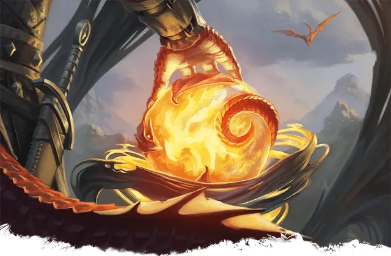

Око Дракона
Orb of Dragonkind
Чудесный предмет, артефакт (требуется настройка)

Давным-давно в мире Драгонлэнс эльфы и люди вели ужасную войну против цветных драконов. Когда уже казалось, что мир обречён, маги Башен Высокого Волшебства объединились и создали пять Очей Дракона, чтобы победить драконов. В каждую из пяти башен было доставлено такое Око, и там оно использовалось для приближения победы. Оком маги заманивали к себе драконов, а затем уничтожали с помощью могущественной магии.
Впоследствии, когда Башни Высокого Волшебства пали, Очи дракона были уничтожены или исчезли в легендах, и лишь три из них, возможно, сохранились. Их магия со временем искажалась. Их первоначальное предназначение, призыв драконов, по-прежнему действует, но также Око дракона позволяет в некоторой мере управлять драконами.
Каждое Око содержит суть злобного дракона, сущность, негодующая, если её магию попытаться получить добром и увещеванием. Кто пытается использовать магию шара, не обладая достаточно сильной волей, могут подпасть под контроль Ока.
Око — это украшенный кристаллический шар диаметром около 10 дюймов (~25см). При использовании он расширяется до диаметра около 20 дюймов (~50см), а внутри него кружит туман.
Пока вы настроены на шар, вы можете действием Магия заглянуть в его глубины. При этом вы должны совершить спасбросок Харизмы Сл 15. При успехе вы управляете Оком, пока сохраняете Настройку на нём. При провале вы Очарованы Оком, пока сохраняете Настройку на нём.
Пока вы Очарованы Оком, вы не можете добровольно прекратить Настройку на нёго, а Око неограниченно сотворяет на вас заклинание Внушение (Сл спасброска 18) на вас, заставляя работать ради его злых целей. Драконья сущность внутри шара может хотеть разные вещи: уничтожение определённого общества или организации, освобождение из Ока, распространение страданий в мире, усиление поклонения Тиамат или что-то другое — решение принимает Мастер.
Случайные свойства. Око Дракона обладает следующими случайными свойствами:
2 малых положительных свойства
1 малое отрицательное свойство
1 основное отрицательное свойство
Заклинания. Око имеет 7 зарядов и восстанавливает 1к4 + 3 потраченных зарядов на каждом рассвете. Если вы управляете Оком, вы можете сотворять с его помощью заклинания из следующей таблицы. В таблице указано, сколько зарядов нужно потратить для сотворения заклинания.
| Заклинание | Затрачиваемые заряды |
| Дневной свет | 1 |
| Защита от смерти | 2 |
| Лечение ран (версия 9-го уровня) | 4 |
| Обнаружение магии | 0 |
| Наблюдение (Сл спасброска 18) | 3 |
Призыв драконов. Пока вы управляете Оком, вы можете действием Магия заставить шар издать телепатический призыв, распространяющийся во все стороны на расстояние 40 миль. Цветные драконы в этих пределах чувствуют неотвратимое стремление прийти к шару как можно быстрее и по самому прямому маршруту. Драконьи божества, такие как Тиамат, не подвержены этому призыву. Драконы, привлечённые шаром, могут быть Враждебны к вам за принуждение против их воли. Как только это свойство использовано, его нельзя использовать снова в течение 1 часа.
Уничтожение шара. Око Дракона имеет Класс Защиты 20 и разрушается, если получает урон от Оружия +3 или от заклинания Дезинтеграция. Ничто другое не может нанести ему урон.